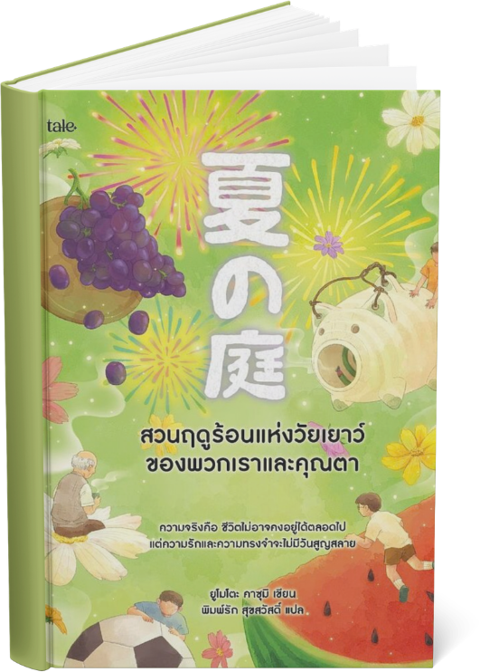

ฤดูร้อนปีหนึ่ง แก๊งเด็กชายชั้นป.6 อย่าง คิยามะ ยามาชิตะ และ คาวาเบะ ตัดสินใจไป "สังเกตการณ์" ชายชราคนหนึ่งที่อาศัยอยู่ แถบชานเมืองเพราะสงสัยว่าถ้าชายแก่ที่อยู่คนเดียวตายไป อย่างโดดเดี่ยวจนเป็นเช่นไรเมื่อได้ใช้เวลากับคุณตา ปลูกดอกคอสมอส กินแตงโม และดูดอกไม้ไฟด้วยกัน ความสงสัยใคร่รู้ในตอนแรกแปรเปลี่ยนเป็นความเข้าใจ และการเติบโต เด็ก ๆ ได้เรียนรู้หลายสิ่งจากชายชรา ที่ผ่านประสบการณ์มามากมาย ช่วงเวลานั้นก่อเกิดเป็น มิตรภาพในฤดูร้อนที่กลายเป็นความทรงจำแสนล้ำค่า และตราตรึงใจไปตลอดกาล